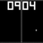
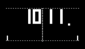

Pypong-Clock
Dieser Artikel wurde für die folgenden Ubuntu-Versionen getestet:
Ubuntu 16.04 Xenial Xerus
Ubuntu 14.04 Trusty Tahr
Zum Verständnis dieses Artikels sind folgende Seiten hilfreich:

Pypong-Clock  ist eine Vollbild-Uhr, geschrieben in Python, im Stile des Spieleklassikers Pong von Atari. Ursprünglich wurde das Programm für den Raspberry Pi entwickelt, es sollte sich aber auch auf anderen Computern problemlos verwenden lassen. Die Uhr ist schnell erklärt: Zu jeder vollen Stunde gewinnt die linke Seite, nach jeder verstrichenen Minute die rechte.
ist eine Vollbild-Uhr, geschrieben in Python, im Stile des Spieleklassikers Pong von Atari. Ursprünglich wurde das Programm für den Raspberry Pi entwickelt, es sollte sich aber auch auf anderen Computern problemlos verwenden lassen. Die Uhr ist schnell erklärt: Zu jeder vollen Stunde gewinnt die linke Seite, nach jeder verstrichenen Minute die rechte.
Installation¶
Das Programm ist kein Bestandteil der offiziellen Paketquellen. Es muss daher manuell installiert werden.
Manuell¶
Der Quelltext des Programms muss bei Bitbucket  heruntergeladen und danach entpackt [1] werden. Außerdem benötigt man das Python-Modul Pygame , das durch die Installation [2] des folgenden Pakets hinzugefügt werden kann:
heruntergeladen und danach entpackt [1] werden. Außerdem benötigt man das Python-Modul Pygame , das durch die Installation [2] des folgenden Pakets hinzugefügt werden kann:
python-pygame (universe)
 mit apturl
mit apturl
Paketliste zum Kopieren:
sudo apt-get install python-pygame
sudo aptitude install python-pygame
Verwendung¶
|  |
| Pypong-Clock |
Wurde alles korrekt vorbereitet, öffnet man ein Terminalfenster [3] und wechselt in das beim Entpacken entstandene Verzeichnis. Nun startet [4] man das Programm durch den Befehl:
python pypong-clock.py
Es gilt zu beachten, dass der Spielstand (Uhrzeit) bei 00:00 beginnt und so lange hochgezählt wird, bis er mit der Systemzeit übereinstimmt, was evtl. ein paar Minuten dauern kann. Erst danach kann die Uhrzeit abgelesen werden. Beendet wird die Uhr durch das Drücken einer beliebigen Taste.
Programmstart¶
Um das Programm komfortabel durch einen Symlink starten zu können, muss es ausführbar gemacht werden:
chmod +x pypong-clock.py
Dann kann man sich einen Symlink z.B. im Ordner ~/bin im Homeverzeichnis anlegen:
mkdir ~/bin ln -s /PFAD/ZU/pypong-clock.py ~/bin/pypong
Nun über den Aufruf von pypong die Uhr starten.
Aussehen¶
Das Programm kann durch Editieren [5] der Datei pypong-clock.py an die eigenen Bedürfnisse angepasst werden. Hier lässt sich beispielsweise die Auflösung des eigenen Bildschirms angeben oder die RGB-Farbe des Spielfeldes. Alle belegbaren Variablen findet man im Wiki der Projektseite . Folgende Tabelle bietet einige Beispiele.
| Beispiele | |
| Belegte Variablen | Funktion |
RESOLUTION = (1024, 600) | Bildschirmauflösung |
WHITE = (255, 255, 255) | RGB-Vordergrundfarbe |
BLACK = (0, 0, 0) | RGB-Spielfeldfarbe |
PADDLE_HEIGHT = 60 | Höhe des Torwarts in Pixeln |
PADDLE_WIDTH = 14 | Breite des Torwarts in Pixeln |
BALL_WIDTH = 28 | Breite des Spielballs |
BALL_HEIGHT = 28 | Höhe des Spielballs |
 Übersichtsartikel
Übersichtsartikel- Erstellt mit Inyoka
-
 2004 – 2017 ubuntuusers.de • Einige Rechte vorbehalten
2004 – 2017 ubuntuusers.de • Einige Rechte vorbehalten
Lizenz • Kontakt • Datenschutz • Impressum • Serverstatus -
Serverhousing gespendet von